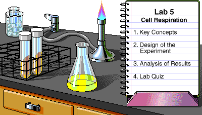

|
Key to Icons
Safety |
 Lab Skills
Lab Skillsby Theresa Knapp Holtzclaw
© 1997, Peregrine Publishers, Inc. All Rights Reserved.
Development Team
Cellular respiration occurs in most cells of both plants and animals. It takes place in the mitochondria, where energy from nutrients converts ADP to ATP. ATP is used for all cellular activities that require energy.
In this laboratory, you will observe evidence for respiration in pea seeds and investigate the effect of temperature on the rate of respiration.
